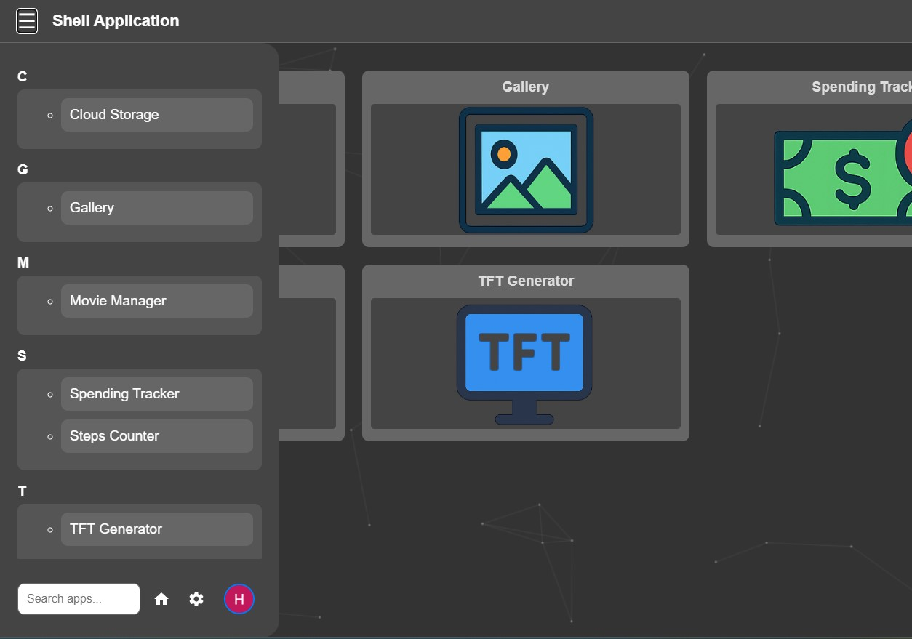
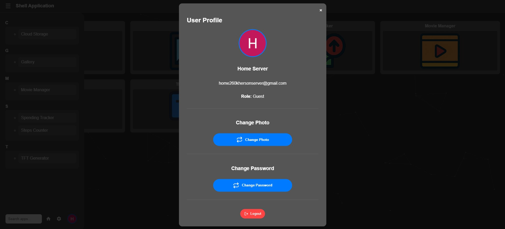
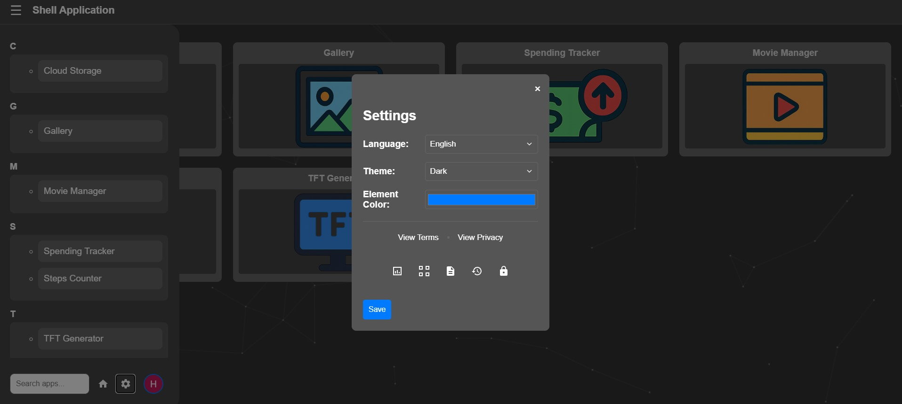
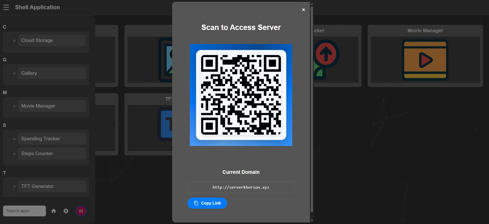
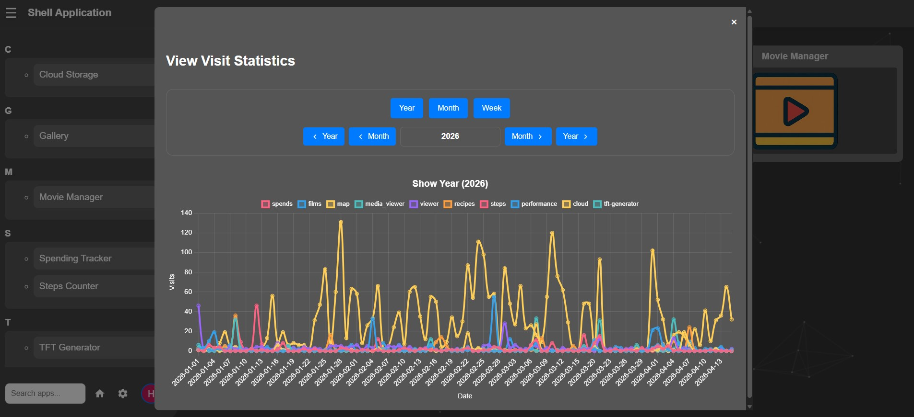
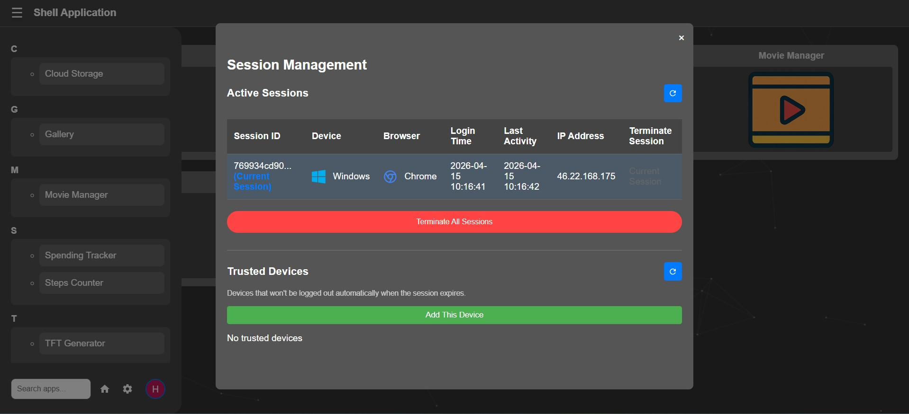
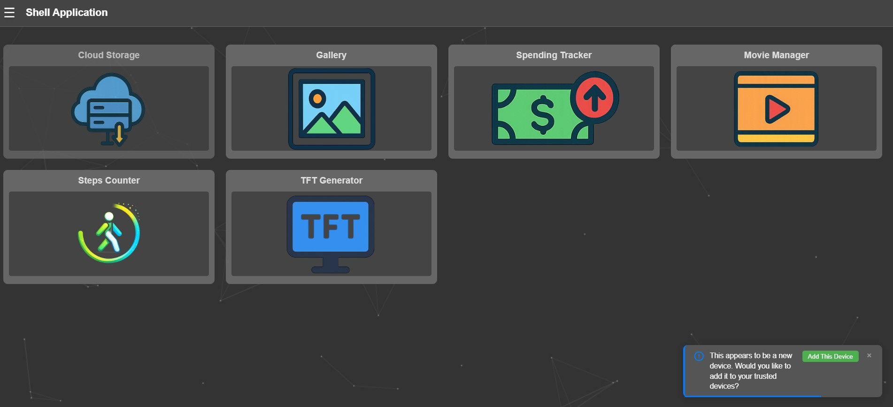
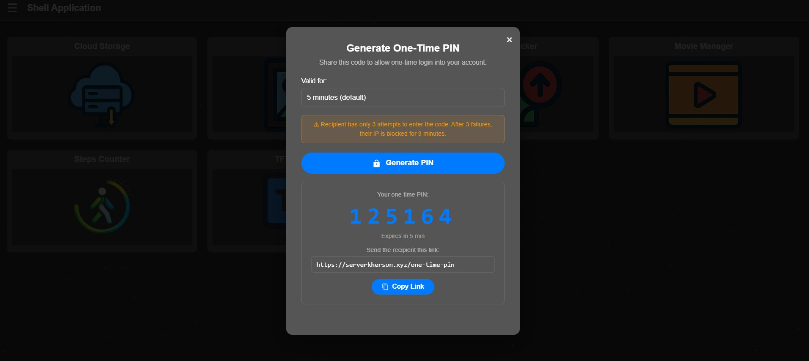

Main Page Instructions
This page explains the main functions of the central hub for all applications on this site.
Overview
The main page serves as your personal dashboard and central hub for all available applications on the platform. When you first log in, you'll see an intuitive tile-based layout displaying all applications you have permission to access.
Each tile represents a separate application or service. The tiles are organized in a responsive grid that adapts to your screen size. Click on any tile to launch the corresponding application in the same window. You can return to the main page at any time using the browser's back button or the menu.
Key features of the main page include:
- Responsive grid layout - Automatically adjusts from 1 to 6 columns based on your screen width
- Smart app organization - Apps are sorted by usage frequency and importance
- Quick access toolbar - Bottom bar with essential functions always within reach
- Personalized experience - Theme, language and accent color persist across sessions
In the top-left corner, you'll find the hamburger menu button (three horizontal lines) that opens a sidebar with additional navigation options, search functionality, and user controls.
Menu Bar
The menu sidebar is your primary navigation tool, accessible by clicking the hamburger icon (≡) in the top-left corner of the main page. This floating panel slides in smoothly from the left and remains open until you click outside of it or select an option.

The sidebar menu is organized into several functional areas:
- Search functionality - Located at the top of the sidebar, the search field provides instant filtering of applications. As you type, the app list below updates in real-time to show matching results. The search matches both app names and descriptions. Press Escape or click the X button to clear the search.
- App shortcuts grid - Below the search, you'll see a scrollable list of all applications you have access to. Each app is represented by its icon and name. Recently used apps appear at the top for quicker access. Click any app to launch it immediately.
- Navigation controls - At the bottom of the sidebar, you'll find three essential buttons:
- Home button - Returns you to the main dashboard from any application
- Settings button (gear icon) - Opens the system settings panel
- Profile button - Displays your account information and logout option
Pro tip: You can also close the sidebar by pressing the Escape key on your keyboard, or by clicking anywhere outside the panel on the main page. The sidebar automatically closes when you select an app to maintain a clean workspace.
User Profile
Access your account details by clicking the profile button (user icon) located at the bottom of the sidebar menu. This opens a sleek modal dialog displaying your personal information and account management options.

The profile modal is divided into several sections displaying your account information:
- Profile photo/avatar - Your current profile picture displayed prominently at the top. Click on the avatar to upload a new image. Supported formats include JPG, PNG, and GIF up to 5MB. The system automatically crops and resizes images to fit the circular frame while maintaining aspect ratio.
- Display name - Your full name as registered in the system. This name appears throughout the platform and in activity logs.
- Email address - Your registered email used for login and notifications. This is also where password reset instructions would be sent if needed.
- User role & permissions - Your assigned role (e.g., Administrator, User, Guest) determines what applications you can access and what actions you can perform. Each role has specific permissions outlined by your system administrator.
- Account status - Indicates whether your account is active, pending verification, or has any restrictions.
The profile modal also provides account management options:
- Change password - Update your password by entering your current password for verification, then your new password twice to confirm. Passwords must be at least 8 characters and include uppercase, lowercase, and numbers.
- Logout - Securely log out from your current session. This terminates your session on the current device only.
Security tip: We recommend using a unique profile photo that helps others recognize you, and changing your password every 90 days. Your password history is maintained to prevent reuse of recent passwords.
Click anywhere outside the modal or the X button to close the profile window. Changes to your profile photo are saved automatically; password changes require confirmation.
Settings
Customize your platform experience by clicking the gear icon (⚙) at the bottom of the sidebar menu. The settings modal opens as an elegant overlay where you can personalize interface language, visual theme, and accent colors to match your preferences.

All settings are organized into clear sections and take effect immediately:
Language Settings
Choose your preferred interface language from the dropdown menu. The system currently supports four languages:
- English (EN) - Full interface translation with left-to-right text direction
- Russian (RU) - Complete localization with Cyrillic character support
- Ukrainian (UK) - Native translation for Ukrainian users
- Belarusian (BE) - Full Belarusian language support
Language selection affects all applications, menus, modals, and system messages throughout the platform. Changes apply immediately without requiring a page reload.
Theme Settings
Select your preferred visual theme from three options:
- Dark theme - High-contrast dark interface with purple accents, ideal for low-light environments and reducing eye strain during extended use
- Light theme - Clean light interface with subtle textures, perfect for bright environments and daytime usage
- Device default - Automatically follows your operating system's theme preference (dark or light mode)
Accent Color
Personalize your experience by selecting a custom accent color from the color picker. This color will be used for:
- Active navigation elements and selected items
- Buttons, links, and interactive controls
- Highlights, borders, and focus indicators
- Scrollbar elements and minimap viewport
Account-wide synchronization: Accent color changes are permanently saved to your user account and will be applied across all applications, devices, and sessions. This ensures a consistent personalized experience everywhere you log in.
Legal Information
At the bottom of the settings modal, you'll find links to important documentation:
- Terms of Use - Complete rules and guidelines for using the platform, including acceptable use policies and user responsibilities
- Privacy Policy - Detailed information about how your personal data is collected, stored, processed, and protected in compliance with GDPR and other privacy regulations
All settings are automatically saved when you make a selection. Click anywhere outside the modal or the close button to exit. If you access settings from a documentation page (like this one), the back button in the top bar will return you to the main application.
Bottom Buttons Toolbar
The bottom toolbar is a fixed control panel located at the bottom of the main page, providing instant access to essential utility functions. This bar remains visible as you scroll and adapts responsively to different screen sizes, collapsing into a menu on mobile devices.
The toolbar contains five primary function buttons, each represented by an intuitive icon and label:
Statistics Button
The chart icon opens comprehensive server and usage statistics. View visit data, server load metrics, and user activity across different time periods (year, month, week). Useful for understanding platform usage patterns and server performance.
QR Code Button
The QR code icon generates a scannable code containing the site's URL. Perfect for quickly sharing access to the platform with colleagues or accessing the site from mobile devices without typing the full address.
Public Files Button
The folder icon opens the public files management interface where you can upload, download, and organize files that are accessible to other users. This is your personal shared storage space on the platform.
Session Management Button
The devices icon opens session control where you can view all active login locations, terminate sessions on other devices for security, and manage trusted devices for automatic login.
One-Time PIN Button
The key icon generates a temporary, single-use PIN code for quick authentication on other devices without entering your full username and password. Ideal for secure temporary access.
QR Code Generator
The QR Code feature provides a quick and convenient way to share platform access with others or transfer your current session to a mobile device. Click the QR Code button in the bottom toolbar to open the QR code generation modal.

How It Works
The system generates a standard QR code containing the platform's URL encoded with your current theme and language preferences. When scanned, users are directed to the login page with your preferred settings pre-selected.
Common Use Cases
- Mobile device setup: Scan the code with your phone to quickly open the site on mobile without typing the long URL
- Team sharing: Display the code during meetings so colleagues can quickly join the platform
- Documentation: Include in printed materials or presentations for easy digital access
- Guest access: Share temporary access with visitors who need to view public content
Scanning Instructions
To scan the QR code, use your smartphone's built-in camera (iOS 11+ or Android 9+) or any QR code scanning application. Point your camera at the code displayed on screen - your device will automatically detect it and show a notification to open the link. No special apps are required on modern smartphones.
Security note: The QR code contains only the site's URL and does not include any authentication credentials or session data. Anyone scanning the code will still need to log in with their own credentials. The code expires when you close the modal, and a new code is generated each time you open it.
Usage Statistics
The Statistics feature provides comprehensive insights into platform usage and server performance. Access this tool by clicking the Statistics button (chart icon) in the bottom toolbar. The statistics modal displays interactive data visualizations and detailed metrics.

Time Period Selection
The statistics window offers three granular viewing modes to analyze usage patterns:
- By Year - View aggregated annual statistics with monthly breakdowns. Ideal for long-term trend analysis and year-over-year comparisons. Shows total visits, unique users, and peak usage months.
- By Month - Detailed monthly view with daily breakdowns. Perfect for understanding weekly patterns and identifying specific high-traffic days. Includes average daily usage and day-of-week comparisons.
- By Week - Granular weekly view showing hourly patterns. Best for analyzing daily activity peaks and understanding when different user groups are most active.
Key Metrics
The statistics dashboard displays several important metrics:
- Total Visits - The total number of page loads and application accesses
- Unique Users - Count of distinct users who accessed the platform
- Session Duration - Average time users spend on the platform per session
- Server Load - CPU and memory usage for different services
- Popular Apps - Ranking of most frequently used applications
- Error Rates - System errors and failed requests (administrators only)
Navigation Controls
Use the date picker to select specific time periods. Navigation arrows allow quick switching between consecutive periods (previous/next week, month, or year). The "Today" button instantly jumps to the current period. Data automatically updates when you change the view mode.
Export and Sharing
Administrators can export statistics data in CSV or JSON format for further analysis. The export includes raw visit data that can be imported into spreadsheet applications or business intelligence tools. Standard users can view but not export statistical data.
Privacy note: Statistics are aggregated and anonymized. Individual user activities are not tracked or displayed. User IDs are hashed before storage to ensure complete privacy while maintaining accurate unique visitor counts.
Understanding these statistics helps administrators optimize server resources, schedule maintenance during low-usage periods, and make informed decisions about platform improvements.
Session & Device Management
The Session Management feature gives you complete control over your account security by allowing you to view and manage all active login sessions across your devices. Click the Sessions button (devices icon) in the bottom toolbar to open the session management interface.

Active Sessions Tab
This tab displays all devices currently logged into your account. For each session, you can see:
- Device information - Device type (desktop, mobile, tablet), browser name and version, and operating system
- Location data - Approximate geographic location based on IP address (city/country)
- Session timing - Login time, last activity timestamp, and session duration
- Current status - Which device is your current session (marked with "This Device")
For each session, available actions include:
- End session - Immediately terminate a session on another device. This logs out that device and requires re-authentication. Use this if you forgot to log out on a public computer or suspect unauthorized access.
- Mark as trusted - Add a device to your trusted devices list for automatic future logins
- View details - See additional technical information about the session
Security warning: When you end a session remotely, the user on that device will immediately lose access and be redirected to the login page. This action cannot be undone - the user must re-enter their credentials to regain access.
Trusted Devices Tab

Trusted devices are those you regularly use and want to stay logged into automatically. Benefits of trusted devices:
- Remain logged in even after standard session expiration (typically 30 days instead of 24 hours)
- Skip two-factor authentication on subsequent visits
- Faster access with reduced security prompts
- Personalized experience with saved preferences
To add a device to the trusted list, check the "Trust this device" option during login, or manually add it from the session management interface. You can revoke trust at any time - the device will then follow standard session expiration rules and may require additional verification.
Security Best Practices
- Regularly review your active sessions and terminate any you don't recognize
- Only trust personal devices you control; never trust public or shared computers
- End old sessions after using public computers or networks
- Check the "Last active" timestamp to identify suspicious activity patterns
One-Time PIN Authentication
The One-Time PIN feature provides a secure, convenient way to authenticate on secondary devices without manually typing your full username and password. This is particularly useful for mobile devices, smart TVs, or situations where typing complex credentials is inconvenient.

How It Works
The one-time PIN system uses a temporary credential exchange that maintains security while simplifying the login process:
- Click the One-Time PIN button (key icon) in the bottom toolbar on your already-authenticated device
- The system generates a unique 6-digit numeric PIN code displayed prominently in the modal
- On your target device (the one you want to log into), navigate to the login page and select "Use PIN Code"
- Enter the 6-digit PIN within the validity period (5 minutes from generation)
- The target device receives a temporary session with the same permissions as your original session
Security Features
Multiple security layers protect the one-time PIN system:
- Single-use only - The PIN becomes invalid immediately after successful authentication or when explicitly cancelled
- Time-limited - PINs expire after 5 minutes regardless of use, preventing stale code attacks
- Source verification - The system verifies the PIN was generated by an authenticated user with valid credentials
- No credential exposure - Your actual username and password are never transmitted or displayed
- Rate limiting - Maximum 3 active PINs per account at any time with 30-second cooldown between generations
Using the PIN Modal
When you click the One-Time PIN button, the modal displays:
- 6-digit PIN code - Large, clearly visible digits for easy reading across devices or to another person
- Expiration timer - Countdown showing remaining valid time (starts at 5:00)
- Regenerate button - Creates a new PIN with a fresh 5-minute timer
- Copy button - Copies the PIN to clipboard for easy pasting
- Cancel button - Closes modal and invalidates the current PIN
Recommended Use Cases
- Mobile login: Generate PIN on desktop, enter on smartphone without complex password typing
- Smart TV access: Use PIN to authenticate on TV browsers where remote keyboards are awkward
- Guest access: Quickly grant temporary access to colleagues without revealing your password
- Temporary devices: Securely access your account on borrowed or public devices